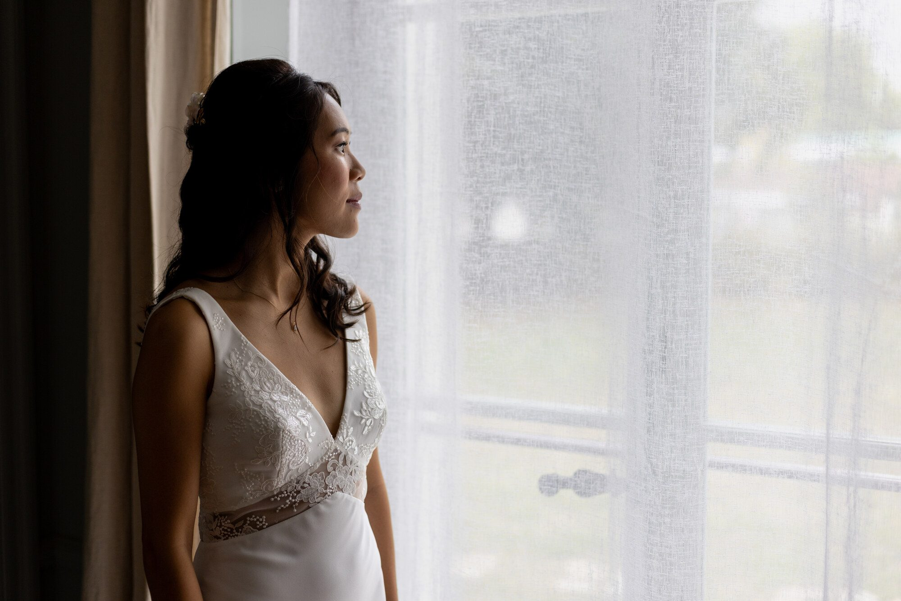
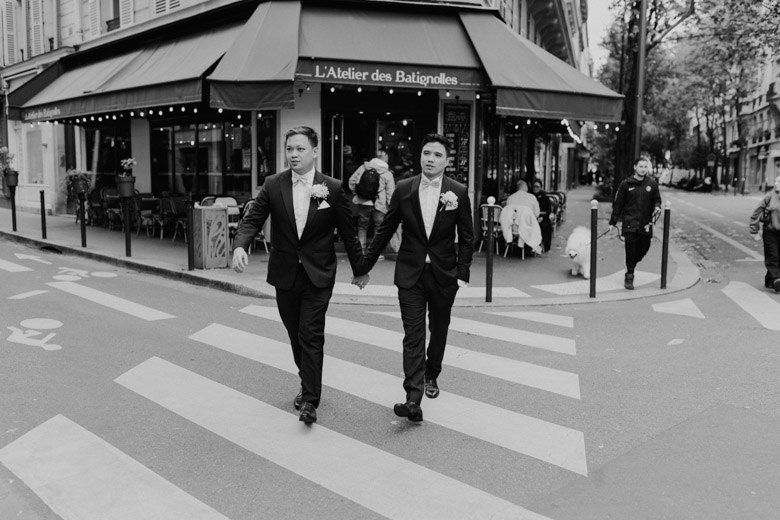
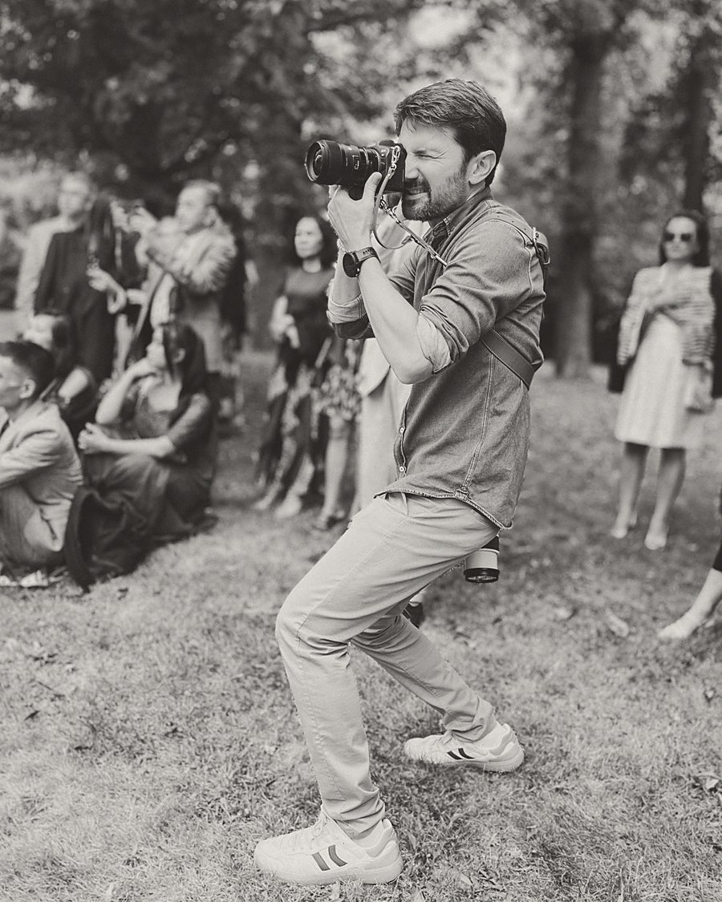

Portfolio
Quelques histoires



Photographe de mariage — Lille, France & ailleurs
Mariages · Élopements · Séances couple — Hauts-de-France, Paris, Belgique & destinations
Bienvenue
Photographe de mariage basé à Lille, j'accompagne les couples partout en France.
Mon approche ? Un reportage photo discret et spontané pour immortaliser les rires, les regards complices et toute l'émotion brute de votre mariage.
Sébastien
Portfolio

« Il n'a pas photographié notre mariage. Il l'a raconté. »
L'approche
Une présence discrète, jamais intrusive. Vous vivez votre journée ; je m'occupe de la capturer.
Pas une collection de jolies images, mais un récit — du premier café du matin à la dernière danse.
Des couleurs justes et des noirs et blancs qui tiennent. Aucune mode de retouche qui datera vos photos.
Leurs mots
★★★★★EXEMPLE — Remplacer par un vrai avis client.Prénom & Prénom — Lieu
★★★★★EXEMPLE — Remplacer par un vrai avis client.Prénom & Prénom — Lieu
★★★★★EXEMPLE — Remplacer par un vrai avis client.Prénom & Prénom — Lieu

À propos
Je suis Sébastien. Photographe à Lille, et voyageur avant ça.
La photographie est arrivée pendant mes dix années en Asie. J'y ai beaucoup voyagé, toujours l'appareil à la main, et j'y ai appris la seule chose qui compte vraiment : savoir attendre le bon moment plutôt que de le provoquer.
Aujourd'hui je photographie des mariages, parce que ce sont les plus belles histoires qu'on me confie. Chaque couple a sa façon d'aimer, son rythme, ses silences. Mon travail consiste à comprendre le vôtre avant même de sortir le boîtier — et à photographier toutes les familles, toutes les unions, sans exception.
Prestations
Formule complète
Intime · demi-journée
Engagement · éditorial
Questions fréquentes
Un aperçu d'une vingtaine d'images sous une semaine, et la galerie complète sous quatre à six semaines. En haute saison, je vous préviens toujours du délai réel avant de m'engager.
Oui, sans hésiter. Paris, la Belgique et le reste de la France régulièrement ; l'étranger avec grand plaisir. Les frais de déplacement sont indiqués clairement dans la proposition.
C'est le cas de presque tout le monde, et c'est précisément pour ça que je travaille en retrait. On se voit avant, parfois pour une séance couple : le jour J, je ne suis plus un inconnu, et ça change tout.
Un message ici, un appel pour faire connaissance, puis un contrat et un acompte de 30 % qui bloque la date. Je ne prends qu'un nombre limité de mariages par an.
Oui — albums fine art, tirages et coffrets, fabriqués en France. Je vous fais une première sélection, vous ajustez, et vous validez avant impression.
Selon vos envies et l'organisation de votre journée, vos besoins ne seront pas les mêmes. Au lieu d'afficher un tarif fixe souvent à côté de la plaque, parlons-en simplement quelques minutes. Je vous composerai ensuite un devis sur mesure.